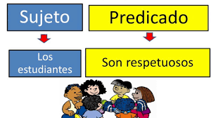

3. La oración simple

La Sintaxis se concibe como un eslabón más de la Gramática a la cual se le atribuye el papel de investigar la FUNCIÓN que desempeñan las distintas categorías gramaticales en el contexto de una ORACIÓN, así como el VÍNCULO que establecen entre ellas y la ESTRUCTURA adoptada.
En lo que concierne a este tercer módulo, vamos a centrarnos en profundizar en aquellas herramientas tecnológicas que nos van a permitir impartir los contenidos didácticos referidos en la ORACIÓN SIMPLE y en sus CONSTITUYENTES INMEDIATOS: SUJETO y PREDICADO junto con el estudio de la CARACTERIZACIÓN según su ESTRUCTURA así como su MODALIDAD de una forma más motivadora y dinámica.
Por tanto, para el siguiente módulo se plantean los siguientes objetivos:
- Valorar el papel que desempeña las música en el proceso de aprendizaje del alumnado como fuente de creatividad e inspiración.
- Incluir en el proceso de enseñanza y aprendizaje del alumnado herramientas que permitan realizar grabaciones de audio sobre contenidos didácticos a trabajar al mismo tiempo que invitan a reflexionar de una manera atractiva sobre los conocimientos adquiridos.
- Ser conscientes de la existencia de plataformas educativas que permiten combinar presentación de contenidos, donde el alumnado asume un papel activo en su elaboración, y su aplicación práctica de un modo lúdico.
- Aprovechar las posibilidades que permite el uso del teléfono móvil como herramienta pedagógica.
- Confeccionar nuestras actividades para evaluar al alumnado haciendo uso de las TIC.